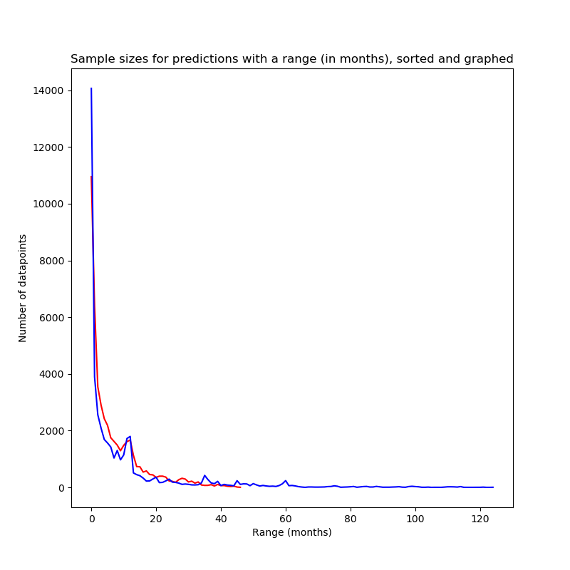
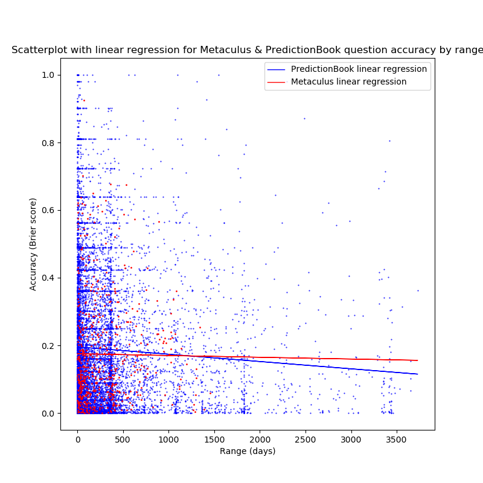
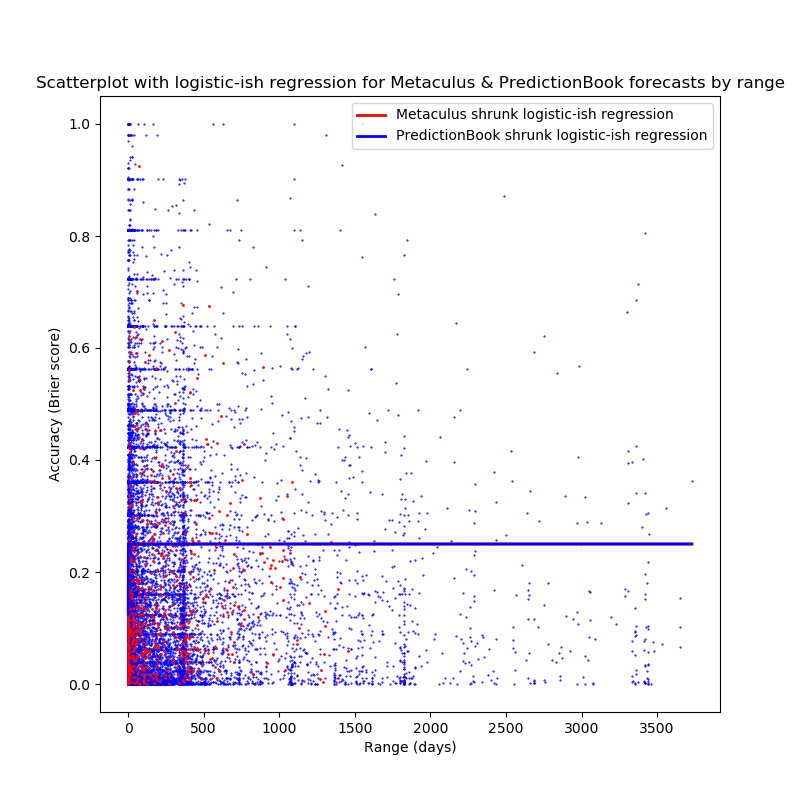
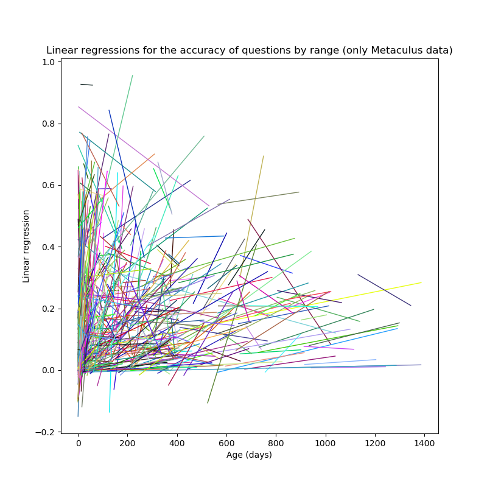

")
author: niplav, created: 2020-03-24, modified: 2024-10-17, language: english, status: maintenance, importance: 6, confidence: possible
This text looks at the accuracy of forecasts in relation to the time between forecast and resolution, and asks three questions: First; is the accuracy higher between forecasts; Second; is the accuracy higher between questions; Third; is the accuracy higher within questions? These questions are analyzed using data from PredictionBook and Metaculus, the answers turn out to be yes, unclear and yes for Metaculus data; and no, no and yes for PredictionBook data. Possible reasons are discussed. I also try to find out how far humans can look into the future, leading to various different results. I personally conclude that humans can on average look 5 years into the future28%.
Above all, don’t ask what to believe—ask what to anticipate. Every question of belief should flow from a question of anticipation, and that question of anticipation should be the center of the inquiry. Every guess of belief should begin by flowing to a specific guess of anticipation, and should continue to pay rent in future anticipations. If a belief turns deadbeat, evict it.
— Eliezer Yudkowsky, “Making Beliefs Pay Rent (in Anticipated Experiences)“, 2007
Judgmental forecasting in which humans aggregate both qualitative and quantitative methods to make predictions, and become better at doing so, is a comparatively simple idea. Basically, one needs to have only a few tools at one's disposal to being ready to start forecasting:
Since the 1980s, forecasting has slowly but surely matured from "X is going to happen because divine revelation told me so" to "my probability distribution on the outcome of this random variable is an X distribution with the following parameters", or alternatively "I assign a probability of X% to this event".
However, since this kind of forecasting is relatively recent, information about the accuracy of long-range forecasting is basically non-existent:
- Long-range forecasts are often stated too imprecisely to be judged for accuracy. More
- Even if a forecast is stated precisely, it might be difficult to find the information needed to check the forecast for accuracy. More
- Degrees of confidence for long-range forecasts are rarely quantified. More
- In most cases, no comparison to a “baseline method” or “null model” is possible, which makes it difficult to assess how easy or difficult the original forecasts were. More
- Incentives for forecaster accuracy are usually unclear or weak. More
- Very few studies have been designed so as to allow confident inference about which factors contributed to forecasting accuracy. More
- It’s difficult to know how comparable past forecasting exercises are to the forecasting we do for grantmaking purposes, e.g. because the forecasts we make are of a different type, and because the forecasting training and methods we use are different. More
— Luke Muehlhauser, “How Feasible Is Long-range Forecasting?”, 2019
In this text, I will try to look at the accuracy of short-term and mid-term forecasting, which may shine some light on the relation between the range of forecasts and their accuracy in general.
The range of a forecast is defined as the length of the timespan between the forecast and the resolution of the forecast (i.e., when we know the outcome of the forecast). Keeping with Muehlhauser 2019, I define short-term forecasts as forecasts with a range of less than a year, mid-range forecasts as forecasts with a range between 1 and 10 years, and long-term forecasts as forecasts with a range of more than 10 years (this distinction is not central to the following analysis, though).
The horizon of a set of forecasts is the range at which these forecasts are as good as chance, i.e. as random guessing. Similarly, one can speak of the horizon of a forecaster (the range at which the forecaster could just as well guess the predictions) and of a forecasting platform. It's conceptually similar to the Lyapunov time.
Fortunately, for short- and mid-range forecasts, two easily accessible sources of forecasts and their resolutions are available online: The two forecasting websites PredictionBook and Metaculus, frequented mostly by hobbyists.
I am not aware of large-scale datasets with resolved long-range forecasts.
To find out about the range of forecasts, I download, parse & analyse forecasting data from these sites, and then analyze the data with Python 3, using NumPy, SciPy and Matplotlib.
Using two datasets with both ~45k predictions, having ranges between 1 day and 10 years (thereby containing forcasts with short and medium range). I investigate the relation between the accuracy of predictions and their range (that is, the time between the prediction being made and the result of the prediction being known).
I find that the data indicates the following conclusions (if any of the terms don't make sense, perhaps reading the illustrative example can help):
| Logistic fit horizon (PredictionBook) | Logistic fit horizon (Metaculus) | Exponential fit horizon (PredictionBook) | Exponential fit horizon (Metaculus) | |
|---|---|---|---|---|
| Between Forecasts | 18 years | 3.6 years | 75 days | 1 day |
| Between Questions | 4.5 days | 1 day | 9 days | <1 day |
| Within Questions mean | 1.08·10²¹ years | 5.28·10²⁰ years | 123.4 years | 4.42 years |
These results suggest what to expect with questions with even greater range: That later predictions (closer to resolution time) on them will generally be more accurate, and that the kinds of questions with a high range might engender predictions with an even higher accuracy than questions with short and medium ranges.
However, there are plausible reasons to expect the trend from 2. to reverse: The questions asked with high range are not very different from questions with medium range, and have a lot less information available to make useful predictions on them; butterfly effects start kicking in systems that are relatively slow moving on human timescales (thus easier to predict on medium timescales), but nearly completely random at the scale of decades and/or centuries; the questions asked about longer timescales are of a different kind and much less predictable.
Furthermore, estimating the length of forecast horizons has returned ambiguous results, and more research in that area is needed. It appears plausible that horizon lengths follow a logarithmic distribution, and over all forecasts assume values of at most several decades.
I hope to update this analysis in the future, when data from predictions with higher ranges has become available, and to check whether the findings in this analysis continue to be correct.
Dillon 2021 investigates the quality of predictions in relation to the number of predictions a forecaster has made (finding that more experienced forecasters are less overconfident), and investigates the relation between Brier score and range; finding, as in this analysis, that surprisingly predictions with longer horizons were more accurate. The latter finding is likely not caused by more experienced forecasters making more long-term predictions.
In this text, I analyze the relation between accuracy and range in forecasting, considering three different aspects:
What exactly does this mean?
Let's say there are two people: Bessie and Heloïse. They are trying to make predictions about the weather about different time horizons (it is currently midnight):
Let's say that they make the following predictions:
Let's also say that they make their predictions in alphabetical order of their names, eight hours after another (Bessie at 00:00 and Heloïse at 10:00).
The following chart shows that, in this scenario, later predictions on the same question are more accurate, and also that predictions on questions with a shorter range are more accurate (for simplicity's sake, I don't use a proper scoring rule here to judge the accuracy of forecasts, but simply the probability assigned to the correct outcome (here the vertical distance of the probability to the outcome)).
Evaluating the relation between forecasts would be as following: Each forecast, its resolution and its timespan are independently analyzed.
We have four predictions:
The Brier scores for ranges are then 0.01 for 14h, 0.09 for 24h, 0.36 for 158h, and 0.9025 for 168h. Here, higher range between forecasts is correlated with worse performance.
In the chart above, the relation of range and accuracy between forecasts would be the black linear regression.
Judging the performance between questions now means looking at the forecasts made on each question and evaluating the performance of forecasts on that question.
Question 1 has a range of 24h, and question 2 has a range of 168h. The Brier score for predictions on question 1 is 0.05, and the Brier score for predictions on question 2 is 0.63125. In this case, a higher range seems to be worse for performance on questions (Brier scores are lower/better for question 1).
In the chart above, the relation between range and accuracy between questions would be the mauve line (which here turns out to be nearly identical to the relation between range and accuracy between forecasts).
Within questions one examines each question separately.
On question 1, the forecast with the higher range has a Brier score of 0.09, and the forecast with the lower range has a brier score of 0.01. So for question 1, higher range is correlated with worse performance.
For question 2, it is similar, the forecast with the higher range (168h) has a score of 0.9025, while the forecast with the lower range (158h) has a score of 0.36. Here also higher range is correlated with worse performance.
One can now try to aggregate the findings from the two questions and could tentatively conclude that generally range within questions is correlated negatively with accuracy of forecasts.
In the chart above, the relation between range and accuracy within questions would be the cyan and mustard linear regressions.
These were of course only illustrative examples, but I hope that now the different approaches in this text are clearer than before.
If you're busy, you can stop reading here (or re-read the results section). This is a natural place to stop reading, everything below is certainly interesting, but not central to understanding.
PredictionBook and Metaculus are both forecasting websites for hobbyists. They are not prediction markets, but rather function on the base of merit and track records: although you don't win money by being right, you can still boast about it (it is an open question whether other people will be impressed). Besides that, these sites make it easier to train ones calibration on real-world questions and become less wrong in the process.
However, both sites differ in their approach to writing questions and judging and scoring forecasts. PredictionBook is much older than Metaculus: the former was first released in 2008, the latter started in 2015. It is also much less formal than Metaculus: it doesn't require stringent resolution criteria, making possible for everybody to judge a question (unrelated to whether the person has even made a prediction on the question themselves!), while Metaculus requires a short text explaining the context and resolution criteria for a question, with the questions being resolved by moderators or admins. This leads to Metaculus having fewer questions than PredictionBook, but each question having more predictions on it. Of the two, Metaculus is much more featureful: It supports not only binary questions, but also range questions with probability distributions, comment threads, closed questions (questions that haven't yet been resolved, but that can't be predicted on), three different kinds of scores (the Brier score, and a logarithmic scoring rule for discrete and continuous forecasts each), as well as the Metaculus prediction, a weighted aggregation of the forecasts of the best forecasters on the site.
Another significant difference between these two websites is the amount of data they publish: PredictionBook shows every single forecast made, while on Metaculus one can only see the community forecast (a the time-weighted median of the forecasts made on the question). This is relevant for this analysis: The two approaches must be analysed separately.
First of all, the data for both platforms needs to be made available in a reasonable format. This works nicer for Metaculus, and is a bit more difficult to achieve for PredictionBook.
The resulting data from Metaculus is here, for PredictionBook it's available here.
The Metaculus data is relatively easy to obtain:
The forecasts are available on a JSON API at
https://www.metaculus.com/api2/questions/?page=. Fortunately,
gimpf has already published a collection of
scripts for fetching &
analysing Metaculus data. I reused their script fetch to download the
raw JSON. I then converted the distinct page objects in the generated
file to a list of questions:
$ cd /usr/local/src
$ git clone https://github.com/gimpf/Metaculus-question-stats
$ cd Metaculus-question-stats
$ ./fetch
$ z site
$ jq -s '[.]|flatten' </usr/local/src/Metaculus/data-questions-raw.json >data/metaculus.json
I then wrote a python script to convert the JSON data to CSV in the form
id,questionrange,result,probability,range, while also filtering out
yet unresolved questions and range questions. Here, id is a unique
numerical ID per question, which will come in handy later, questionrange
is the duration between the time for creating and resolving the question,
result is the result of the question (either 0 or 1), probability
is the probability given by the predictor $]0;1[$, and range is the
duration between the forecast and the resolution.
The script is not terribly interesting: It just reads in the JSON data, parses and traverses it, printing the CSV in the process.
Code:
#!/usr/bin/env python3
import json
import time
from time import mktime
f=open("../../data/metaculus.json")
jsondata=json.load(f)
for page in jsondata:
for question in page["results"]:
if question["possibilities"]["type"]=="binary" and (question["resolution"]==1 or question["resolution"]==0):
try:
restime=time.strptime(question["resolve_time"],"%Y-%m-%dT%H:%M:%S.%fZ")
except:
restime=time.strptime(question["resolve_time"],"%Y-%m-%dT%H:%M:%SZ")
try:
createtime=time.strptime(question["created_time"],"%Y-%m-%dT%H:%M:%S.%fZ")
except:
createtime=time.strptime(question["created_time"],"%Y-%m-%dT%H:%M:%SZ")
for pred in question["prediction_timeseries"]:
timediff=mktime(restime)-pred["t"]
qtimediff=mktime(restime)-mktime(createtime)
print("{},{},{},{},{}".format(question["id"], qtimediff, question["resolution"], pred["community_prediction"], timediff))
The resulting CSV file contains nearly 50k predictions.
PredictionBook publishes its data over an API, which I will use in the future to get hold of the data.
Not knowing this when I initially wrote the code, I regressed to barbaric behavior: I knew that all individual predictions are visible on the web, which means I had to parse the HTML itself using BeautifulSoup.
This time the code is more complex, but just slightly so: It starts at the first page of predictions, and loops down to the last one, every time iterating through the questions on that page.
It then loops through the predictions on each question and parses out the date for the prediction and the credence.
Every question on PredictionBook has two dates related to its resolution: the 'known on' date, for which the resolution was originally planned, and by which the result should be known, and the 'judged on' date, on which the resolution was actually made. I take the second date to avoid predictions with negative differences between prediction and resolution time.
The output of this script is in the same format as the one for Metaculus
data: id,questionrange,result,probability,range (although here
probability can also be 0 and 1, which Metaculus doesn't allow).
Code:
#!/usr/bin/env python2
import urllib2
import sys
import time
from bs4 import BeautifulSoup
from time import mktime
def showforecasts(linkp, res):
urlp="https://predictionbook.com{}".format(linkp)
reqp=urllib2.Request(urlp, headers={"User-Agent" : "Firefox"})
try:
conp=urllib2.urlopen(reqp, timeout=10)
except (urllib2.HTTPError, urllib2.URLError) as e:
return
datap=conp.read()
soupp=BeautifulSoup(datap, "html.parser")
timedata=soupp.find(lambda tag:tag.name=="p" and "Created by" in tag.text)
resolved=timedata.find("span", class_="judgement").find("span", class_="date created_at").get("title")
restime=time.strptime(resolved,"%Y-%m-%d %H:%M:%S UTC")
created=timedata.find("span", class_="date").get("title")
createtime=time.strptime(created,"%Y-%m-%d %H:%M:%S UTC")
responses=soupp.find_all("li", class_="response")
for r in responses:
forecasts=r.find_all("span", class_="confidence")
if forecasts!=[]:
est=float(r.find_all("span", class_="confidence")[0].text.strip("%"))/100
else:
continue
estimated=r.find("span", class_="date").get("title")
esttime=time.strptime(estimated,"%Y-%m-%d %H:%M:%S UTC")
print("{},{},{},{},{}".format(linkp.replace("/predictions/", ""), mktime(restime)-mktime(createtime), res, est, mktime(restime)-mktime(esttime)))
for page in range(1,400):
url="https://predictionbook.com/predictions/page/{}".format(page)
req=urllib2.Request(url, headers={"User-Agent" : "Firefox"})
try:
con=urllib2.urlopen(req)
except (urllib2.HTTPError, urllib2.URLError) as e:
continue
data=con.read()
soup=BeautifulSoup(data, "html.parser")
predright=soup.find_all("li", {"class": "prediction right"})
predwrong=soup.find_all("li", {"class": "prediction wrong"})
for pred in predright:
linkp=pred.span.a.get("href")
showforecasts(linkp, "1.0")
for pred in predwrong:
linkp=pred.span.a.get("href")
showforecasts(linkp, "0.0")
Surprisingly, both platforms had almost the same amount of individual predictions on binary resolved questions: ~48k for Metaculus, and ~44k for PredictionBook.
The first approach I took was to simply take the probability and result for each forecast, and calculate the Brier score for that one probability. I then calculated the correlation and the linear regression between that Brier score and the range of the forecast.
Now that the two datasets are available, they can be properly analyzed.
First, the raw data is loaded from the two CSV files, removing the first line (the names of the variables, for other languages such as R). Then the ID is converted to integer, and the rest of the fields are converted to floats (the range is a float for some Metaculus questions, and while the result can only take on 0 or 1, using float there makes it easier to calculate the brier score later). After that, npegative ranges are removed from the dataset, and ranges are converted from seconds to days, making them slightly easier to plot:
import csv
import numpy as np
import scipy.stats as sps
import scipy.optimize as spo
daysec=24*60*60
def getpreds(s):
pfile=open(s)
predreader=csv.reader(pfile)
preds=[]
for entry in predreader:
if entry[0][0]=="#":
continue
else:
preds.append([int(entry[0]), float(entry[1])/daysec, float(entry[2]), float(entry[3]), float(entry[4])/daysec])
preds=list(filter(lambda x: x[4]>0, preds))
return np.array(preds).T
pb=getpreds("../../data/pb.csv")
met=getpreds("../../data/met.csv")
This code filters out forecast ranges smaller than 0, which is necessary because the data contains some forecasts with negative ranges. These stem from two different sources:
In the Metaculus data, these are forecasts on questions that have resolved retroactively. These occur in the scenario where forecasters predict on a question where the resolution time is not clear, and the resolution occurs before the question closes. To prevent an unfair advantage of people who predicted while the resolution was unfolding (and therefore predicting on an event that had happened in the past), the resolution date is set some timespan before the resolving event (e.g. a day). However, the predictions after the retroactive resolution are still included in the data.
Examples:
For PredictionBook, users can still predict after any resolution. The script fetches the first resolution, making some predictions retroactive. I could instead retrieve the result of the last resolution, but I don't think it would be worth the effort, or improve the quality of the data very much.
Examples:
In the next step, I extract the individual variables from the data
and give them names (handling the various indices is tiresome after
a while). ress stands for results, fcs for forecasts, and rngs
for ranges:
pbress=pb[2]
pbfcs=pb[3]
pbrngs=pb[4]
metress=met[2]
metfcs=met[3]
metrngs=met[4]
The Brier Score is a scoring rule for binary forecasts. It takes into account both the calibration and resolution of forecasts by calculating the mean squared error of forecasts () and outcomes ():
The Brier score is quite easy to implement:
def brier(x, y):
return np.mean((x-y)**2)
The first thing we can now do is to compare the forecasts from the two websites, and it turns out that Metaculus forecasts are slightly less good than PredictionBook forecasts:
>>> brier(metfcs, metress)
0.17085016230074224
>>> brier(pbfcs, pbress)
0.16073690328405374
But this comparison is not telling us much, since the questions on the two websites and the strictness for resolving questions are radically different, as explained here.
Now, one can calculate the Brier score for each of the forecasts and outcomes, with the mean being unnecessary, because we want to examine the score of each forecast individually:
pbbriers=(pbfcs-pbress)**2
metbriers=(metfcs-metress)**2
First, one can check how high the range of these two datasets really is. The PredictionBook forecasts with the highest range span 3730 days (more than 10 years), for Metaculus it's 1387 days (nearly 4 years):
>>> np.max(metrngs)
1387.018779324351
>>> np.max(pbrngs)
3730.0094560185184
One can now look at the correlation between range and Brier score first for Metaculus, and then for PredictionBook:
>>> np.corrcoef(metbriers, metrngs)
array([[1. , 0.02165924],
[0.02165924, 1. ]])
>>> np.corrcoef(pbbriers, pbrngs)
array([[ 1. , -0.02030743],
[-0.02030743, 1. ]])
For Metaculus, the results are not surprising: The positive correlation tells us that the higher the range of a forecast, the lower the accuracy (or, poetically, at Metaculus the fogs of time grow thicker the farther you want to look into the future).
However, for PredictionBook, the opposite is true (on this dataset): Forecasts with higher ranges give more accurate predictions, at least on average.
However, these correlations are quite weak, 0.02 could just be random noise. I would have to use a significance test to discern whether they are statistically significant.
Now, one can also perform a linear regression to gauge what the relation of range and accuracy of a forecast is:
>>> sps.linregress(metrngs, metbriers)
LinregressResult(slope=1.4921976403559925e-05, intercept=0.16753867328019442, rvalue=0.021659238937630332, pvalue=1.89939817752528e-06, stderr=3.1319561138899387e-06)
>>> sps.linregress(pbrngs, pbbriers)
LinregressResult(slope=-8.921762030379796e-06, intercept=0.16351703198845793, rvalue=-0.020307433721919746, pvalue=1.913246393632673e-05, stderr=2.0868414512480246e-06)
We can see that the rvalue is just the correlation, and that the
pvalue is pretty good (<0.00001 and <.0001 for Metaculus and
PredictionBook, respectively).
These are not particularly surprising. The inferred brier score at range 0 (the forecast directly before resolution) is ~0.16, which seems a bit pessimistic, but other than that, growth with higher ranges for Metaculus data and lower accuracy for higher ranges for PredictionBook data match the correlation. The steepness of the regression is quite low because the ranges are in days.
Visualizing the accuracies of the forecasts with a scatterplot and linear regressions shows a similar picture (red dots are for Metaculus forecasts, blue dots are for PredictionBook forecasts):
fig=plt.figure(figsize=(8,8))
plt.xlabel("Range (days)")
plt.ylabel("Accuracy (Brier score)")
plt.plot(metrngs, metbriers, '.', color='red', markersize=1)
plt.plot(pbrngs, pbbriers, '.', color='blue', markersize=1)
plt.savefig("allscatter.png")
The high amounts of noise are probably due to the low number of predictions for single days (or, in the case of weeks and months, for years/months with a high range, as not enough questions with this range have resolved yet).
Using a linear regression on the Brier score here, however, carries with it a deep issue: Unless the slope is 0, the linear regression will be below 0 or above 1 for some positive range—so one can't use it to predict forecaster performance on questions with very long ranges.
(There is also the additional issue that in non-0-slope regressions,
the linear regression might tell us that forecasters would perform worse
than chance at some point in the future, that is, give an expected Brier
score >0.25, which is not what I expect to happen, unless reality is
actively preventing us from making accurate long-term predictions).
Instead, I want to use functions that for positive values of x don't
produce out-of-bounds errors (they at least return valid Brier scores).
I furthermore make some additional assumptions/desiderata about the function to fit to the data:
The logistic function seems like an optimal candidate here: it fulfills at least desideratum 1 (if shrunk) and 3, and with some fiddling may even satisfy 2.
Because this is different from a logistic
regression (scaled
values above the maximum (with a maximum of 0.25, some of the observed
Brier scores are greater), continuous values to predict), I curve-fit
explicitly using scipy.optimize.curve_fit (why did I only learn about
this function from scrolling through the scipy documentation‽ This
is awesome!) with
two parameters.
(Why not do a linear regression on the log-transformed data? Because the corresponding transformation ends up with 0 inside a logarithm for PredictionBook data: The inverse logistic is , and some PredictionBook Brier scores are 1).
So we instead use the following formula, which is just a squashed logistic function that the maximum is at 0.25:
def shrunk_logistic(x, slope, intercept):
return 0.25*1/(1+np.exp(slope*x+intercept))
We can now fit a curve with those parameters to the data, limiting
the slope to negative values and the intercept to positive values
(we want the function to be monotonically rising, and we want the
y-intercept to be below
0.125, that is we want the "middle" of the logistic function to be to the
right of 0, even if we can't guarantee that the function will be ~0 for
x=0).
>>> pblogifit=spo.curve_fit(shrunk_logistic, pbrngs, pbbriers, bounds=([-np.inf, 0], [0, np.inf]))
(array([-4.78706654e-04, 1.40345975e-20]), array([[ 1.69607043e-09, -4.52668529e-07],
[-4.52668529e-07, 4.22860649e-04]]))
>>> metlogifit=spo.curve_fit(shrunk_logistic, metrngs, metbriers, bounds=([-np.inf, 0], [0, np.inf]))
(array([-2.37260045e-03, 3.97380474e-19]), array([[ 7.35951274e-09, -1.08226199e-06],
[-1.08226199e-06, 3.59766672e-04]]))
The result can be plotted:
fig=plt.figure(figsize=(8,8))
plt.title("Scatterplot with logistic-ish regression for Metaculus & PredictionBook forecasts by range (in days)")
plt.xlabel("Range (days)")
plt.ylabel("Accuracy (Brier score)")
fullrng=np.array(range(0, round(max(pbrngs))+1))
plt.plot(metrngs, metbriers, '.', color='red', markersize=1)
plt.plot(fullrng, shrunk_logistic(fullrng, metlogifit[0][0], metlogifit[0][1]), 'red', label='Metaculus shrunk logistic-ish regression', linewidth=2)
plt.plot(pbrngs, pbbriers, '.', color='blue', markersize=1)
plt.plot(fullrng, shrunk_logistic(fullrng, pblogifit[0][0], pblogifit[0][1]), 'blue', label='PredictionBook shrunk logistic-ish regression', linewidth=2)
plt.legend()
plt.savefig("allscatter_logi.png")
I wonder whether the reason the Metaculus fit reaches the Metaculus data so much faster is because the Metaculus data ends earlier? (Also, yes, that is the logistic function and not a linear function for the PredictionBook data, it's a really moderate slope).
Also, both plots start out with : not restricting the intercept to positive values returns negative intercepts (meaning that at 0, the value is of the logistic function is even higher than (in this case) 0.125):
>>> pblogifit=spo.curve_fit(shrunk_logistic, pbrngs, pbbriers, bounds=([-np.inf, -np.inf], [0, np.inf]))
(array([-1.12830197e-14, -5.87766698e-01]), array([[ 1.32206792e-09, -4.11999218e-07],
[-4.11999218e-07, 4.67829989e-04]]))
>>> shrunk_logistic(0, -1.12830197e-1, -5.87766698e-01)
0.16071313965158385
>>> metlogifit=spo.curve_fit(shrunk_logistic, metrngs, metbriers, bounds=([-np.inf, -np.inf], [0, np.inf]))
(array([-3.05026968e-04, -7.03162493e-01]), array([[ 3.73762741e-09, -7.74711069e-07],
[-7.74711069e-07, 3.76596526e-04]]))
>>> shrunk_logistic(0, -3.05026968e-04, -7.03162493e-01)
0.1672221410619337
Here, the slopes are much steeper than in the more restricted case above.
Another function we could fit to the data might be of the form , with some (the function is decaying exponentially, but flipped so that it approaches 0, and then we scale it so that it always converges toward 0.25).
We can guarantee this function to fulfill all three desiderata:
and
and (for )
which is the case.
In python, this is simply
def shift_exp(x, b):
return ((b**x)-1)/(-4)
We can now fit that kind of curve to the data:
>>> pbexpfit=spo.curve_fit(shift_exp, pbrngs, pbbriers, bounds=([0], [1]))
(array([1.22550795e-22]), array([[3.83266961e-18]]))
>>> metexpfit=spo.curve_fit(shift_exp, metrngs, metbriers, bounds=([0], [1]))
(array([0.95788506]), array([[6.50321645e-07]]))
As one can see, fitting this kind of curve suggests that
the predictions become equivalent to random guesses almost
immediately for PredictionBook, and for ranges >100 days for
Metaculus. Perhaps there are some problems with floating-point
arithmetic
at play here: the best fit would be at something like
, but curve_fit doesn't know how to count that
low?
I believe that these findings are pretty cool: They give some sense of how long the range of forecasts needs to be for them to be approximately random.
We can do this by finding out at what point our function first predicts Brier scores sufficiently close to 0.25, let's take 0.24 as an arbitrary cutoff (which would be, on average, assigning a probability of to events that take place).
Let's call this number the horizon: beyond it, our forecasts become random, we can neither steer nor see, the fogs of time have grown too thick. From our perspective, only chaos reigns there, and every decision-theoretic ship that sails it is never to return with valuable information.
It is sometimes invoked by people when they want to talk about the inherent unknowability of the future, always without evidence of any actual number.
Then, for the squashed logistic function, we have to find the so that
Then, the logistic-ish forecasting horizon gives
>>> (np.log((1/0.96)-1)-metlogifit[0][1])/metlogifit[0][0]
1339.4812558296296
>>> (np.log((1/0.96)-1)-pblogifit[0][1])/pblogifit[0][0]
6638.833618277785
which is ~3.6 years for Metaculus, and ~18 years for PredictionBook.
With the exponential fit, we know that
That gives
>>> np.log(0.04)/np.log(metexpfit[0][0])
74.80978286870999
>>> np.log(0.04)/np.log(pbexpfit[0][0])
0.06282811825117969
less than a day for the PredictionBook predictive horizon, and ~75 days for the Metaculus predictive horizon.
Of course, don't believe these numbers too much: The difference in dataset range is probably causing a lot of the difference in fit, the exponential fit is way more pessimistic, and I haven't performed any statistical tests to determine how to much believe these particular numbers.
But I'm really excited about testing these conclusions with growing datasets as forecasting platforms exist longer.
Overall, I like the logistic fit much better than the exponential one: in practice, we know that forecasters don't give quasi-random predictions for questions that are further out than 100 days (or, as the PredictionBook fit suggests, that forecasting is impossible!).
But one can also take a look at the quality of the fit to the data: What is the mean squared error of the predicted and the actual Brier score for the observed data?
>>> np.mean((shrunk_logistic(pbrngs, pblogifit[0][0], pblogifit[0][1])-pbbriers)**2)
0.05057901068476697
>>> np.mean((shrunk_logistic(metrngs, metlogifit[0][0], metlogifit[0][1])-metbriers)**2)
0.031372382650708616
>>> np.mean((shift_exp(pbrngs, pbexpfit[0][0])-pbbriers)**2)
0.058142052832572635
>>> np.mean((shift_exp(metrngs, metexpfit[0][0])-metbriers)**2)
0.0352617381522454
The fits agree (very slightly) with me here: in both cases the logistic fit has a marginally smaller mean squared error in predicting the Brier score.
I believe that the finding for the PredictionBook data is quite surprising.
A priori, one would believe that beliefs about the near future are generally more accurate than beliefs about the far future: We can predict the weather in 2 minutes far better than the weather in 6 months, we can say much more about the position of a rock in an hour than in 100 years, more about the popularity of a political party in 2 months as opposed to 10 years. Even in reasonably chaotic systems, one should expect to become more and more accurate the closer one comes to the expected time.
One example for this is a roulette wheel (the resolution being the number of the slot the ball eventually rolls into): I am able to give a much narrower probability distribution on values 100ms before the ball falls into the slot than 1s before, and 5s before resolution my prediction is going to be nearly uniform. Information, like nearly everything else, has diminishing value, and posteriors eventually converge towards the truth.
However, there is an interesting effect that takes place with systems that eventually reach equilibrium. Take, for example, a double pendulum in an environment with gravity: If I am at the start of the swinging of the double pendulum, I can predict the state in 100ms better than in 1s (because it becomes more chaotic over time), but I am also better able to predict the state in 1h (or how long it takes to reach equilibrium) than in 1s (because it reaches equilibrium in hanging straight down).
(I got this observation from “The World as Holocaust” by Stanisław Lem, though it is obvious in hindsight).
So, what is the reason for this rather weird finding? Several possible reasons come to mind.
The most obvious solution is that the analysis above is absolute bogus and completely meaningless: It compares questions about global catastrophic risks to questions about the extinction of banana brands, different kinds of questions with different kinds of forecasts.
Here, one would assume that the longer-term questions asked are generally easier to predict, and that the effect goes away when one compares predictions among similary questions (or, better, within questions).
Generally, the long-term questions we prefer asking seem to be more menable to forecasting than short-term questions: development of population sizes, the climate, especially the movement of interstellar bodies is much more thoroughly modelled than the development of markets, elections and the weather. This is of course only a weak trend, but one that could influence the questions (as will be investigated in this section).
Simpson's Paradox is the phenomenon that while two features are correlated in a dataset, it can be true that the features are negatively correlated for some distinct subsets of the dataset.
It is best explained visually:

It might be the case that this analysis for PredictionBook data has come up against an instance of Simpson's paradox: The accuracy of forecasts is negatively correlated with range within the same question, but the accuracy of forecasts is positively correlated with range across questions (because the kinds of questions with longer time horizons generally allow more accurate forecasts). Unfortunately, whether Simpson's paradox applies or not can not always be easily judged from the scatterplot of datapoints.
However, below I check the correlation of range and forecast accuracy between questions, and find that they are negatively correlated, and furthermore find that they are positively related within questions, which strongly indicates that the effect probably comes from questions with a long range receiving more accurate predictions (in the PredictionBook dataset).
Another question one might ask is: How big are the sample sizes at the tails when the range is high?
This is important: low sample sizes increase noise dramatically, and make findings much less reliable.
To get a rough overview over the sample sizes, on can look at the number
of samples for each bucket. The sample sizes were calculated such that
at position i in the array {pb,met}ss was the sample size for week i:
metss=np.bincount(np.sort(np.floor(metrngs/30)).astype(int))
pbss=np.bincount(np.sort(np.floor(pbrngs/30)).astype(int))
I generated charts for the sample sizes in days:
fig=plt.figure(figsize=(8,8), clear=True)
plt.xlabel("Range (months)")
plt.ylabel("Number of datapoints)")
plt.plot(metss, '-', color='red')
plt.plot(pbss, '-', color='blue')
plt.savefig("ss_plot.png")

The red graphs stands for Metaculus sample sizes, the blue graph stands for PredictionBook sample sizes.
As one can see, the sample sizes have a drastical skew towards recent predictions, not surprising for relatively young platforms (although 10 years for PredictionBook is sizable by internet standards, it's not that much compared to the expected range of some predictions on the platform, which might go into the thousands of years).
This can be seen in the data as well: The median range of Metaculus and PredictionBook predictions is only a couple of months, and less than 25% of questions have a range of more than one year:
>>> np.quantile(metrngs/365, 0.25)
0.0938035443856715
>>> np.quantile(metrngs/365, 0.5)
0.3411479925867841
>>> np.quantile(metrngs/365, 0.75)
0.9173088057010588
>>> np.quantile(pbrngs/365, 0.25)
0.04357030060882801
>>> np.quantile(pbrngs/365, 0.5)
0.3080797501268392
>>> np.quantile(pbrngs/365, 0.75)
0.9775999492643329
Moved to Appendix B.
I hope that the dataset becomes richer the older these platforms become.
Because in the linear regression all datapoints are weighted equally, it could well be that a tiny bit of noise at the tails dominates the entire regression.
Another way to determine at the relation between forecasting accuracy and range is to look at the range of questions and not of individual forecasts.
In this case, this means taking the forecasts on all questions with a given range and calculating the brier score on these forecasts.
The range of a question is determined by taking the time difference between the opening time (the time when the first prediction on the question could have been made) and the resolution time. One could imagine other metrics to determine the range of a question: the mean range for forecasts of that question, the median range for forecasts on that question, time differences between writing/opening and closing/resolution times of the question, and probably many more.
Here, the range of a question was set to the time difference between opening time and resolution time. The reasons for this were threefold:
First, I had no clear idea about the time when people were making forecasts on questions. Are most of the forecasts made just after opening, or just before closing? Or is the distribution uniform on the time between opening and closing? And are these distributions different on long-range as opposed to short-range questions? Also, I was unsure whether taking the mean time for forecasts would just be the same as comparing forecasts directly. So taking the median or the mean of the forecasts made was less preferable.
Second, what I cared about here was the uncertainty of questions at time of writing, not at time of prediction. This is much better tracked by opening time than by proxy on the forecasts.
Third, there was the question of data availability. Both Metaculus and PredictionBook publish opening/resolution times, but PredictionBook has no clear distinction between closing and resolution time (there is, however, a distinction between effective resolution time and planned resolution time ("When was the question resolved?" vs. "When should the question have been resolved?")).
First, the dataset grouped by forecasts had to be grouped by the question ID, in both cases a positive integer. The resulting datastructure should have the structure
[[id, open-resolve-timediff, [outcomes], [forecasts], [forecast-resolve-timediffs]]*]
where the splat just indicates the inner list can be repeated. This is achieved by first finding the grouping of forecasts by question ID, then concatenating the ID, the question range, the list of outcomes, the list of forecasts and the list of forecast ranges:
def group(d):
a=[]
for e in np.unique(d[0]):
indices=np.where(d[0]==e)
a.append([e, d[1][indices[0][0]], d[2][indices], d[3][indices], d[4][indices]])
return a
metquestions=group(met)
pbquestions=group(pb)
Strictly speaking, the outcomes could be a single element, since for every question there is only one well-defined outcome, but this makes it easier to later compute the brier score.
Showcase:
>>> metquestions[10]
[13.0, 119.99914351851852, array([0., 0., 0., 0., 0., 0., 0., 0., 0., 0., 0., 0., 0., 0., 0., 0., 0.]), array([0.2 , 0.4 , 0.2 , 0.3 , 0.15, 0.3 , 0.4 , 0.4 , 0.4 , 0.4 , 0.45,
0.4 , 0.44, 0.4 , 0.44, 0.4 , 0.38]), array([119.94258413, 118.91094545, 118.71650504, 115.99830505,
113.03583134, 89.66780818, 87.76008922, 87.12385685,
85.12093715, 85.08304395, 83.7246415 , 83.19617587,
82.69982874, 73.11635207, 71.99461814, 71.21645502,
64.07551593])]
>>> brier(metquestions[10][3],metquestions[10][2])
0.13509411764705884
One can now also see how many questions there are in the two datasets (with the relatively unsurprising result that PredictionBook has much more resolved questions):
>>> len(metquestions)
557
>>> len(pbquestions)
13356
The next step involves computing the Brier score for the forecasts on each question:
>>> metqbrier=np.array([[i[1], brier(i[3], i[2])] for i in metquestions])
>>> pbqbrier=np.array([[i[1], brier(i[3], i[2])] for i in pbquestions])
metqbrier is a list that contains sublists, one for each question,
the sublist containing the range for the question and the brier score
for all predictions on the question (pbqbrier has the same structure).
Again I use linear regressions, correlation coefficients and scatter plots to inadequately analyze the data.
For accuracy between questions, the results were pretty surprising:
>>> np.corrcoef(metqbrier.T)
array([[ 1. , -0.0099402],
[-0.0099402, 1. ]])
>>> np.corrcoef(pbqbrier.T)
array([[ 1. , -0.05180824],
[-0.05180824, 1. ]])
>>> sps.linregress(metqbrier.T[0], metqbrier.T[1])
LinregressResult(slope=-5.199153608270726e-06, intercept=0.1751301126619239, rvalue=-0.009940204896962441, pvalue=0.8149259597777081, stderr=2.2200837795403376e-05)
>>> sps.linregress(pbqbrier.T[0], pbqbrier.T[1])
LinregressResult(slope=-2.1538793571528e-05, intercept=0.1952547647088438, rvalue=-0.05180823990580795, pvalue=2.0875245782500886e-09, stderr=3.5928014948058268e-06)
For Metaculus, the slope off the linear regression is approximately , compared that with for the slope for the linear regression between forecasts—the slope is less steep, but also negative. For PredictionBook, the slope of the linear regression is , compared with for the data between forecasts, which is slightly steeper.
However, look at the p-value for the Metaculus correlation/linear regression! 0.8! So that number is basically worthless.
In both cases, there is a small negative correlation between the brier score and the range (to be precise, the larger the range, the lower the brier score/the higher the accuracy). For the Metaculus data, this effect is not as pronounced as for the PredictionBook data, though both correlations are quite weak. The two linear regressions also show the same effect (lower accuracy at shorter ranges/higher accuracy at higher ranges), but again the slope of the linear regression is not very steep.
And now: linear regressions and scatterplots!
The following are scatterplots with range on the X-axis and accuracy (calculated using the Brier score) on the Y-axis. Again, red dots/lines are for Metaculus data (twice as big as PredictionBook data points, to make them visible in the sea of blue), and blue dots/lines are for PredictionBook data.
fig=plt.figure(figsize=(8,8))
plt.xlabel("Range (days)")
plt.ylabel("Accuracy (Brier score)")
plt.plot(pbqbrier.T[0], pbqbrier.T[1], '.', color='blue', markersize=1)
plt.plot(pbqbrier.T[0], pbqintercept+pbqslope*pbqbrier.T[0], 'blue', label='PredictionBook linear regression', linewidth=1)
plt.plot(metqbrier.T[0], metqbrier.T[1], '.', color='red', markersize=2)
plt.plot(pbqbrier.T[0], mqintercept+mqslope*pbqbrier.T[0], 'red', label='Metaculus linear regression', linewidth=1)
plt.legend()
plt.savefig("allq.png")

The general trend seems to be: questions with a higher range tend to receive forecasts that have a higher accuracy than questions with a lower range. In itself, this is already a fascinating finding, and might explain some of the effect seen with accuracy between forecasts in the previous section). On the other hand, the data is still quite noisy, the correlations found are quite weak, and the slopes of the linear regressions are are very near 0.
All in all, it's plausible that the relation of range and accuracy between questions explains a large part of the the weird relation for accuracy and range between forecasts, but I don't know enough statistics to tease these out exactly. My intuition tells me that the effect on accuracy between questions is too small to explain the whole anomaly between forecasts.
Again, one can fit the nonlinear exponential/logistic function defined above to the data between questions.
>>> pblogifit_betweenq=spo.curve_fit(shrunk_logistic, pbqbrier.T[0], pbqbrier.T[1], bounds=([-np.inf, 0], [0, np.inf]))
(array([-2.70329933e+00, 5.32716622e-52]), array([[ 0.16764075, -0.01981014],
[-0.01981014, 0.00898443]]))
>>> metlogifit_betweenq=spo.curve_fit(shrunk_logistic, metqbrier.T[0], metqbrier.T[1], bounds=([-np.inf, 0], [0, np.inf]))
(array([-7.92206883, 33.48197 ]), array([[ 199420.41507448, -811407.37948018],
[-811407.37948018, 3301492.9741521 ]]))
>>> pbexpfit_betweenq=spo.curve_fit(shift_exp, pbqbrier.T[0], pbqbrier.T[1], bounds=([-np.inf, 0], [0, 1]))
(array([4.77613047e-20]), array([[5.82829061e-18]]))
>>> metexpfit_betweenq=spo.curve_fit(shift_exp, metqbrier.T[0], metqbrier.T[1], bounds=([-np.inf, 0], [0, 1]))
(array([0.70814538]), array([[0.01386776]]))
But these numbers don't tell us much by themselves, do they become clearer when plotted?
fig=plt.figure(figsize=(8,8))
plt.title("Scatterplot with logistic-ish regression for Metaculus & PredictionBook forecasts by range")
plt.xlabel("Range (days)")
plt.ylabel("Accuracy (Brier score)")
fullrng=np.array(range(0, round(max(pbrngs))+1))
plt.plot(pbqbrier.T[0], pbqbrier.T[1], '.', color='blue', markersize=1)
plt.plot(metqbrier.T[0], metqbrier.T[1], '.', color='red', markersize=2)
plt.plot(fullrng, shrunk_logistic(fullrng, metlogifit_betweenq[0][0], metlogifit_betweenq[0][1]), 'red', label='Metaculus shrunk logistic-ish regression', linewidth=2)
plt.plot(fullrng, shrunk_logistic(fullrng, pblogifit_betweenq[0][0], pblogifit_betweenq[0][1]), 'blue', label='PredictionBook shrunk logistic-ish regression', linewidth=2)
plt.legend()
plt.savefig("allq_logi.png")
fig=plt.figure(figsize=(8,8))


Not—quite?
(The Metaculus regression is not visibile because it lies just under the PredictionBook regression, the short red line in the logistic plot is the Metaculus regression that starts at 0, while the PredictionBook regression starts at 0.125).
Basically, the regressions here conclude that the best is that predictions on questions with any time horizons longer than a couple of days are indistinguishable from randomness, given the assumptions made here.
This actually makes sense: We observe that the correlation between range and accuracy is positive, so the best curve that fits the data under the assumption of falling accuracy with higher range will conclude that we're immediately in a domain with uniform randomness.
The predictive horizons here are
>>> (np.log(1/(0.96)-1)-metlogifit_betweenq[0][1])/metlogifit_betweenq[0][0]
4.627582089426849
>>> (np.log(1/(0.96)-1)-pblogifit_betweenq[0][1])/pblogifit_betweenq[0][0]
1.1756203958314926
~4.5 days for Metaculus, and around a day for PredictionBook with logistic functions, and
>>> np.log(0.04)/np.log(metexpfit_betweenq[0][0])
9.327212826230811
>>> np.log(0.04)/np.log(pbexpfit_betweenq[0][0])
0.07235368359483728
similarly short timespans for the exponential fit.
And, comparing the quality (mean squared error) of the nonlinear fits to one another reveals that the two methods are remarkably similar at fitting the data (which is not surprising, since they look nearly identical):
>>> np.mean((shrunk_logistic(pbqbrier.T[0], pblogifit_betweenq[0][0], pblogifit_betweenq[0][1])-pbqbrier.T[1])**2)
0.04466653583438647
>>> np.mean((shrunk_logistic(metqbrier.T[0], metlogifit_betweenq[0][0], metlogifit_betweenq[0][1])-metqbrier.T[1])**2)
0.029639024718816995
>>> np.mean((shift_exp(pbqbrier.T[0], pbexpfit_betweenq[0][0])-pbqbrier.T[1])**2)
0.0466620438028492
>>> np.mean((shift_exp(metqbrier.T[0], metexpfit_betweenq[0][0])-metqbrier.T[1])**2)
0.029795384871374987
The big question now is: Why do forecasts on predictions on questions with a higher range generally receive better Brier scores?
First, it's important to consider the p-value for the correlation with the Metaculus data. It's 80% likely we would have had the same result, given that the correlation was 0: not solid foundation to base further understanding on. But we got the same result with the PredictionBook data, with a decent p-value, so what is going on?
The explanation falls back to the considerations in the section on range and biased questions: the long-range questions we might be asking could be "easier" to predict, at least in the medium term, than the short-range questions.
How could one test this? Metaculus contains categories for questions, and one might want to examine whether the negative trend between question range and accuracy of predictions on that question still hold when questions in the same category are examined (although one might run into problems with the dataset size here—even the 557 questions in the dataset aren't enough to provide a decent p-value). Unfortunately, no such categorization system exists for PredictionBook, one might try to analyze the titles of the questions, but it doesn't seem worth the effort.
For PredictionBook data, this explains why range and forecast accuracy were negatively correlated between forecasts: the negative correlation between range and accuracy between questions confounds the relationship. We can test whether this is true by looking at the relation of range and accuracy within questions, where two forecasts at the same time are in some sense "equally difficult".
If there exists any bias in regard to what kinds of questions get asked in relation to their range, how can we correct for this bias?
One approach could be to compare similar questions, such as only questions about artificial intelligence, the cost & speed of gene sequencing or autonomous cars, and examine the relation of range and accuracy within these categories. This might eliminate bias resulting from questions in different kinds of domains being easier or harder to forecast.
Here, I take a simpler approach. I examine the relation of range and accuracy within questions; are forecasts made on the same question later generally more accurate than forecasts made on a question earlier?
In order to do this, one can compute the Brier score for each prediction, and then perform one linear regression/compute the correlation per question to discern whether the relation is positive or not.
With metquestions and pbquestions, we already have the necessary
data available to perform the analysis.
We can create a list of the form [[[brier_scores],[ranges]]*]:
wmetqbrier=[[i[4], (i[3]-i[2])**2] for i in metquestions]
wpbqbrier=[[i[4], (i[3]-i[2])**2] for i in pbquestions]
Since lreg can't deal with datasets of size 1, we have to filter
those out of the dataset (the Metaculus dataset doesn't contain these,
but I want to prepare for a possible future dataset where it does),
and they don't make much sense in our analysis anyway:
wmetqbrier=list(filter(lambda x: len(x[0])>1, wmetqbrier))
wpbqbrier=list(filter(lambda x: len(x[0])>1, wpbqbrier))
One can play around and calculate the correlation between range and accuracy for some questions:
>>> list(map(np.corrcoef, wmetqbrier[:4]))
[array([[1. , 0.53853205],
[0.53853205, 1. ]]),
array[[1. , 0.6569835],
[0.6569835, 1. ]]),
array([[1. , 0.05048498],
[0.05048498, 1. ]]),
array([[1. , 0.28412936],
[0.28412936, 1. ]])]
>>> list(map(np.corrcoef, wpbqbrier[:4]))
[array([[1. , 0.52609801],
[0.52609801, 1. ]]),
array([[1. , 0.89254317],
[0.89254317, 1. ]]),
array([[ 1. , -0.39887059],
[-0.39887059, 1. ]]),
array([[ 1., -1.],
[-1., 1.]])]
The perfect negative correlation come from the fact that some of the questions in the dataset have only two predictions, which all by chance anti-correlate with the range. This is not the case for all questions, as one can see.
For the linear regression, one can simply map sps.linregress over
the lists:
>>> wmetqregs=list(map(lambda x: sps.linregress(x[0], x[1]), wmetqbrier))
>>> wpbqregs=list(map(lambda x: sps.linregress(x[0], x[1]), wpbqbrier))
/usr/local/lib/python3.8/dist-packages/scipy/stats/_stats_mstats_common.py:130: RuntimeWarning: invalid value encountered in double_scalars
slope = r_num / ssxm
The result for wpbqbrier is unexpected. The culprits turn out to be
a set of questions on which the same prediction has been made, twice,
at the same second, which confuses the linear regression algorithm:
>>> list(filter(lambda x: x[0][0]==x[0][1] and len(x[0]==2) and x[1][0]==x[1][1] and len(x[1])==2, wpbqbrier))
[[array([367.09616898, 367.09616898]), array([0.2025, 0.2025])], [array([367.09637731, 367.09637731]), array([0.2025, 0.2025])], [array([367.09899306, 367.09899306]), array([0.0225, 0.0225])], [array([367.09908565, 367.09908565]), array([0.25, 0.25])], [array([367.09936343, 367.09936343]), array([0.16, 0.16])], [array([367.10018519, 367.10018519]), array([0.0225, 0.0225])], [array([0.25236111, 0.25236111]), array([0.0025, 0.0025])], [array([0.36797454, 0.36797454]), array([0.25, 0.25])], [array([0.25259259, 0.25259259]), array([0.0625, 0.0625])], [array([0.36671296, 0.36671296]), array([0.04, 0.04])], [array([0.40542824, 0.40542824]), array([0.09, 0.09])]]
However, they can be filtered out pretty easily, and we recompute wpbqregs:
>>> wpbqbrier=list(filter(lambda x: not (x[0][0]==x[0][1] and len(x[0]==2) and x[1][0]==x[1][1] and len(x[1])==2), wpbqbrier))
>>> len(wpbqbrier)
7596
>>> wpbqregs=list(map(lambda x: sps.linregress(x[0], x[1]), wpbqbrier))
Again, the results are split in three parts: linear regression, logistic curve-fit and exponential curve-fit.
We can now visualise the linear regression for each question by setting plotting all linear regressions with random colors (the horizontal length of the linear regression indicates the time between the first prediction and the last prediction on the question: a question that was opened three years ago, closed two years ago, and resolves now appears on the X-axis between 730 and 1095):
fig=plt.figure(figsize=(8,8))
plt.xlabel("Range (days)")
plt.ylabel("Linear regression")
for i in range(0, len(wmetqregs)):
r=wmetqregs[i]
rngs=wmetqbrier[i][0]
slope, intercept, _, _, _=r
cl=hex(random.sample(range(0, 256*256*256), 1)[0]) #random rgb code
#left padding with zeros, can't be bothered to read the formatting docs right now
cl='#'+('0'*(6-len(cl[2:])))+cl[2:]
plt.plot(rngs, intercept+slope*rngs, color=cl, linewidth=1)
plt.savefig("permetquestion.png")

Basically the same code for image generation is used also for the PredictionBook data:

Although the plots are kind of cool to look at, I'm not really sure what they can tell us. My guess would be that it somewhat shows a trend with higher ranges responding to higher Brier scores (and therefore lower accuracy).
We can test whether this suspicion is acually correct by calculating the average offset and the average ascension—if the ascension is positive, our suspicion is confirmed. We have to weight questions by how many predictions they have received, otherwise the result is skewed by questions with few predictions (if you're trying to find out whether, in basketball, making more free throws makes you better at it, you'd also want to more strongly weight data from players with a larger number of shots).
This is done by computing the linear regression for range/accuracy for
each question (we did that with w{met,pb}qregs), multiplying it by the
number of predictions on that question, adding up the linear regressions,
and then dividing the result by the total number of predictions in the
dataset (clean_{met,pb}forecasts):
>>> clean_metforecasts=np.sum([len(wmetqbrier[i][0]) for i in range(0, len(wmetqbrier))])
>>> awmetqslope=np.sum([len(wmetqbrier[i][0])*wmetqregs[i][0] for i in range(0, len(wmetqregs))])/clean_metforecasts
0.003048078896358434
>>> awmetqintercept=np.sum([len(wmetqbrier[i][0])*wmetqregs[i][1] for i in range(0, len(wmetqregs))])/clean_metforecasts
0.0388493550172143
>>> clean_pbforecasts=np.sum([len(wpbqbrier[i][0]) for i in range(0, len(wpbqbrier))])
>>> awpbqslope=np.sum([len(wpbqbrier[i][0])*wpbqregs[i][0] for i in range(0, len(wpbqregs))])/clean_pbforecasts
1.3731897568280482
>>> awpbqintercept=np.sum([len(wpbqbrier[i][0])*wpbqregs[i][1] for i in range(0, len(wpbqregs))])/clean_pbforecasts
-98.59072648628822
The PredictionBook data—how do I put this—simply makes no sense. I am pretty confident that this code is correct, but I think that the questions with few predictions are producing incorrect results, especially when the predictions are very close to each other. So let's arbitrarily exclude questions with less than ten predictions (actually an arbitrary choice I did not iterate over to get a "desired" result):
>>> fwpbqbrier=list(filter(lambda x: len(x[0])>=10, wpbqbrier))
>>> len(fwpbqbrier)
849
>>> # Recomputing linear regressions
>>> clean_fpbforecasts=np.sum([len(fwpbqbrier[i][0]) for i in range(0, len(fwpbqbrier))])
12865
>>> fwpbqregs=list(map(lambda x: sps.linregress(x[0], x[1]), fwpbqbrier))
>>> fawpbqslope=np.sum([len(fwpbqbrier[i][0])*fwpbqregs[i][0] for i in range(0, len(fwpbqregs))])/clean_fpbforecasts
0.0024623252612491924
>>> fawpbqintercept=np.sum([len(fwpbqbrier[i][0])*fwpbqregs[i][1] for i in range(0, len(fwpbqregs))])/clean_fpbforecasts
0.00030707364984746446
This looks much better.
So it is true that accuracy within question generally is higher with lower range for Metaculus data, and similar for PredictionBook data. Everything else would have been surprising.
fig=plt.figure(figsize=(8,8))
plt.title("Mean of linear regressions on accuracy within questions (red is Metaculus data, blue is PredictionBook data)")
plt.xlabel("Range (days)")
plt.ylabel("Accuracy (Brier score)")
plt.plot(pbrngs, awmetqintercept+awmetqslope*pbrngs, 'red', label='Metaculus aggregate linear regression', linewidth=1)
plt.plot(pbrngs, fawpbqintercept+fawpbqslope*pbrngs, 'blue', label='PredictionBook aggregate linear regression', linewidth=1)
plt.legend()
plt.savefig("withintotal.png")

This chart, however, shows that the result is not as clean as one might hope: both linear regressions are very steep, predicting Brier scores of >1 for ranges of more than a year, which is clearly nonsensical.
This probably results from the probabilities being treated linearly, while handling them in logspace would be much more appropriate.
One can now similarly fit the logistic curve to the data within every question, yielding a list of parameters for the logistic function.
Doing this naively via a list comprehension fails:
>>> within_logi_fits=list(map(lambda x: spo.curve_fit(shrunk_logistic, x[0], x[1], bounds=([-np.inf, 0], [0, np.inf])), wmetqbrier))
Traceback (most recent call last):
File "<stdin>", line 1, in <module>
File "<stdin>", line 1, in <lambda>
File "/usr/local/lib/python3.8/dist-packages/scipy/optimize/minpack.py", line 799, in curve_fit
raise RuntimeError("Optimal parameters not found: " + res.message)
RuntimeError: Optimal parameters not found: The maximum number of function evaluations is exceeded.
To both find the culprit and then ignore it, we have to write the code iteratively:
within_logi_fits_met=[]
for e in wmetqbrier:
try:
within_logi_fits_met.append(spo.curve_fit(shrunk_logistic, e[0], e[1], bounds=([-np.inf, 0], [0, np.inf])))
except RuntimeError:
within_logi_fits_met.append([])
print(e)
continue
The resonsible data for the question looks completely innocuous:
[array([20.11263452, 19.95414332, 19.86404009, 19.80523882, 19.68123836,
19.30289307, 19.08148786, 18.67971381, 17.57324535, 16.17246518,
14.64708341]), array([0.49 , 0.5184, 0.49 , 0.4225, 0.3481, 0.4225, 0.3481, 0.3481,
0.16 , 0.3481, 0.16 ])]
I decide to just ignore any instances that give errors, and calculate
within_logi_fits_pb the same way as above, just with fwpbqbrier. This
removes data from 1 question from the Metaculus dataset, and from 10
questions from the PredictionBook dataset:
>>> len(list(filter(lambda x: len(x)==0, within_logi_fits_met)))
1
>>> len(list(filter(lambda x: len(x)==0, within_logi_fits_pb)))
10
These can now be plotted, as the linear regressions were above:
fig=plt.figure(figsize=(8,8))
plt.title("Logistic curve-fits for the accuracy of questions by range (only Metaculus data)")
plt.xlabel("Range (days)")
plt.ylabel("Logistic curve-fit")
for i in range(0, len(within_logi_fits_met)):
r=within_logi_fits_met[i]
if len(r)==0:
continue
rngs=wmetqbrier[i][0]
slope, intercept=r[0][0], r[0][1]
cl=hex(random.sample(range(0, 256*256*256), 1)[0]) #random rgb code
#left padding with zeros, can't be bothered to read the formatting docs right now
cl='#'+('0'*(6-len(cl[2:])))+cl[2:]
plt.plot(fullrng_met, shrunk_logistic(fullrng_met, slope, intercept))
plt.savefig("permetquestion_logi.png")
Again, basically the same code, but for PredictionBook data, gives us these plots:

These charts look like what I would have expected:
I'm unsure about the best way to aggregate these different sigmoids into one, as I did with the linear regressions above.
for there is in a god's face more of marvel than prediction can tell, and when that face is vaster than a great temple and seen looking down at sunset in the cryptic silences of that upper world from whose dark lava it was divinely hewn of old, the marvel is so strong that none may escape it.
— Howard Phillips Lovecraft, “The Dream-Quest of Unknown Kadath”, 1943
We now can calculate the forecast horizon defined in this section for every question, and then calculate some summary statistics of the forecast horizons on all questions in the two datasets.
First, we have to compute the horizons discovered by the fit (ignoring
the invalid fits represented by []):
>>> within_logi_fits_met_filt=list(filter(lambda x: len(x)>0, within_logi_fits_met))
>>> within_logi_fits_pb_filt=list(filter(lambda x: len(x)>0, within_logi_fits_pb))
>>> met_logi_horizons=[(np.log((1/0.96)-1)-f[0][1])/f[0][0] for f in within_logi_fits_met_filt]
>>> pb_logi_horizons=[(np.log((1/0.96)-1)-f[0][1])/f[0][0] for f in within_logi_fits_pb_filt]
So, what horizons do we have?
| Mean | Median | Mode | Variance | Maximum | Minimum | |
|---|---|---|---|---|---|---|
| Metaculus | 1.93e+23 | 4.18 | 4.18 | 1.42e+49 | 8.79e+25 | 0.0043 |
| PredictionBook | 3.93e+23 | 4.18 | 4.18 | 1.11e+50 | 3.04e+26 | 0.000137 |
This shouldn't be that surprising: some of the logistic fits were basically flat, and some were basically vertical, so it is to be expected that we have lots of outliers present. What is interesting is that the median & mode in both datasets are the same number, ~4.17. This is probably due to many questions having a slope of -1 and an intercept 1, leading to the same logistic fit.
We can plot a histogram of the horizons for questions (with the horizon length being logarithmic, base 10):
plt.savefig("perpbquestion_logi.png")
fig=plt.figure(figsize=(8,8))
plt.title("Horizons for logistic curve-fits within questions")
plt.xlabel("Horizon length")
plt.ylabel("Number of questions")
plt.hist([np.log10(met_logi_horizons), np.log10(pb_logi_horizons)], bins=20, color=('red', 'blue'))
plt.savefig("logi_horizons.png")
From this we can glean that:
len(list(filter(lambda x: x>1 and x<10, met_logi_horizons)))/len(met_logi_horizons)≅68.9%len(list(filter(lambda x: x>=10 and x<10000, met_logi_horizons)))/len(met_logi_horizons)≈22.8%len(list(filter(lambda x: x<=1 or x>=10000, met_logi_horizons)))/len(met_logi_horizons)≈8.27%We can now perform a similar analysis, just using exponential fits. Here, for some reason, we don't run into problems with inscrutable errors:
within_exp_fits_met=[spo.curve_fit(shift_exp, e[0], e[1], bounds=([0], [1])) for e in wmetqbrier]
within_exp_fits_pb=[spo.curve_fit(shift_exp, e[0], e[1], bounds=([0], [1])) for e in fwpbqbrier]
This family of curves can now be plotted (first the exponential functions fitted to questions from the Metaculus data, and then to questions from the PredictionBook data):
fig=plt.figure(figsize=(8,8))
plt.title("Exponential curve-fits for the accuracy of questions by range (only Metaculus data)")
plt.xlabel("Range (days)")
plt.ylabel("Exponential curve-fit")
for i in range(0, len(within_exp_fits_met)):
r=within_exp_fits_met[i]
if len(r)==0:
continue
rngs=wmetqbrier[i][0]
coeff=r[0][0]
cl=hex(random.sample(range(0, 256*256*256), 1)[0]) #random rgb code
#left padding with zeros, can't be bothered to read the formatting docs right now
cl='#'+('0'*(6-len(cl[2:])))+cl[2:]
plt.plot(fullrng_met, shift_exp(fullrng_met, coeff))
plt.savefig("permetquestion_exp.png")
. Two empty regions (“rivers”) are also visible.")
I personally believe that these plots are kind of gorgeous. Interesting are the two "rivers" in the Metaculus plots: they indicate that there are some horizons for which there are ~0 questions with that horizon. But this is possibly just due to a small sample-size & randomness, as they don't really occur in the PredictionBook data.
Otherwise, these plots look as expected: Most exponential fits quickly go to randomness (i.e. from an expected Brier score of 0 to a Brier score of 0.25 in a short range), and some show longer horizons.
Again, I don't quite know how to aggregate these, but I can calculate the expected horizons for the questions.
Calculating the horizons is as easy as before:
met_exp_horizons=[np.log(0.04)/np.log(f[0][0]) for f in within_exp_fits_met]
pb_exp_horizons=[np.log(0.04)/np.log(f[0][0]) for f in within_exp_fits_pb]
And the summary statistics (in days):
| Mean | Median | Mode | Variance | Maximum | Minimum | |
|---|---|---|---|---|---|---|
| Metaculus | 1613.62 | 4.64 | 4.64 | 478494147 | 497370.21 | 0.064 |
| PredictionBook | 45041.92 | 4.64 | 4.64 | 8.29e+11 | 5.31e+7 | 0.064 |
The mean here is ~4.42 years for Metaculus data, and 123.4 years for PredictionBook data.
We can see that the expected horizons aren't as large (at least ~15 orders of magnitude smaller), but again we observe that both the median and the mode take on the same value of 4.64.
So we decide to plot a histogram of the expected horizons for the questions, scaled logarithmically:
fig=plt.figure(figsize=(8,8))
plt.title("Horizons for expstic curve-fits within questions")
plt.xlabel("Horizon length (days, log₁₀)")
plt.ylabel("Number of questions")
plt.hist([np.log10(met_exp_horizons), np.log10(pb_exp_horizons)], bins=20, color=('red', 'blue'))
plt.savefig("exp_horizons.png")
 questions. Then several bins, all with ~40 questions, to ~10⁴, then declining to ~15 questions per bin. Below 10, no strongly discernible pattern, again with ~20 questions per bin. Metaculus data quite similar: ~350 questions on the 10 bin, then a “hill” pattern that peaks at 10² and then declines to <10 questions per bin at 10⁴. ~20 questions per bin for horizons <10.")
I wonder if the regularity I perceive (the nice declining "hill"-like patterns for horizons >10) is a spurious artifact, a result of the specific method of analysis, or actually inherent in the data. If not, it indicates that PredictionBook contains more resolved questions with longer expected horizons (checks out: questions with longer ranges can be expected to have longer horizons, and PredictionBook has more & older resolved questions than Metaculus).
Also, again, most questions have ranges ~10 (probably the 4.64 value from above), which is likely due to them becoming more accurate at higher ranges (discussed here).
One might, again, be interested in the sample sizes. How many predictions to questions receive?
As we know, the Metaculus dataset contains predictions on 557 questions, the PredictionBook dataset 13356, but there are way fewer questions with more than 1 unique prediction in the PredictionBook dataset:
>>> len(metquestions)
557
>>> len(pbquestions)
13356
>>> len(wmetqbrier)
557
>>> len(wpbqbrier)
7596
Let's first create sorted lists containing the numbers of forecasts on each question:
pblens=np.sort([len(x[0]) for x in wpbqbrier])
metlens=np.sort([len(x[0]) for x in wmetqbrier])
One can now look at some central values for those datasets: the maximum, mimimum, mean, median, and mode:
>>> import statistics
>>> np.min(metlens)
2
>>> np.max(metlens)
101
>>> np.mean(metlens)
86.83482944344703
>>> np.median(metlens)
101.0
>>> statistics.mode(metlens)
101
>>> np.min(pblens)
2
>>> np.max(pblens)
99
>>> np.mean(pblens)
5.072538177988415
>>> np.median(pblens)
3.0
>>> statistics.mode(pblens)
2
This is—surprising, to say the least. Metaculus makes creating new questions much harder, and more strongly encourages users to predict on existing questions, with an elaborate tagging system for questions. PredictionBook on the other hand simplifies the questions creation process, leaving out moderation, complex resolution criteria etc. Still, I'm surprised—there must be at least one PredictionBook question popular enough for 100 forecasts! But apparently not.
One result here is, to say the least, confusing—where did all those 101s come from in the Metaculus data‽ Surely, there are questions with more than 101 forecasts (which I know, this question about 2016 being the warmest year on record has 765 forecasts)!
")
I initially suspected a bug in my code, but to my surprise, after further investigation, it turns out that the Metaculus API returned timeseries with elements removed so that the length was always 101.
I can think of two reasons to do this:
I mailed the support address on the site, asking for a full timeseries on resolved binary questions.
After the support address had not responded to my inquiry, I contacted one of the admins of the site on the Discord, but was informed that updating the API would be too difficult to do (which is understandable, the Metaculus developers do not exist to cater to my whims, and are doing a phenomenal job).
More than a year later, I got hold off the private Metaculus data via my job, luckily the Metaculus admins also allowed me to use it for my private investigations.
I subsequently tried to replicate my previous findings with the private data, finding that the findings mostly replicate, or are only slightly different.
This analysis is still quite lacking in several aspects and could be significantly improved.
The Metaculus dataset and the PredictionBook dataset are quite different: For PredictionBook, the full dataset of all predictions is available, while the Metaculus API only offers data of the weighted average of the community as a timeseries (with ≤101 datapoints). Due to this limitation, the PredictionBook results and the Metaculus results can't be easily compared.
This is the reason why I reported the results for the Metaculus dataset and the PredictionBook dataset separately, so that future work can work either with aggregated timeseries data or with full datasets of individual forecasts.
PredictionBook, unlike Metaculus, makes no attempts to generate a shared notion of ground truth: Any user can resolve any question as they like, with the question-writer having the final verdict. This would make it quite easy to manipulate the dataset.
In contrast, Metaculus has a set of admins and moderators that share a notion of how the questions relate to events in the world, which keeps questions and resolutions consistent with each other.
I am grateful to Nuño Sempere for pointing out a fatal flaw in my previous version of this analysis, which caused me to rewrite it nearly completely.
Im am incredibly indebted to the Long-Term Future Fund, who gave me enough money for this project that I could justify to my parents that I wasn't wasting my time, and to pay my cryonics membership for the year on top of that.
The code for image generation can be found here, the complete code for analyzing the data can be found here.
The code for previous versions was written in
Klong, but abandoned for reasons
concerning performance & replicability. The previous code for analysis
can be found here,
the previous code for image generation can be found
here (in some
ways the previous code was much nicer, especially when calculating
metquestions).
After receiving the private data from the Metaculus admins, I decided to check whether my previous findings would still bear out with the full dataset, or whether equally shrinking the data on questions with many forecasts and fewer forecasts had introduced significant amounts of bias.
This also gave me an excellent opportunity to test my own calibration on the findings: Would I be correct about which findings would and wouldn't hold up to scrutiny with nicer datasets? I used PredictionBook to record my predictions about the results before running the code on the data (relying on the reader's trust that I hadn't just run the code beforehand and predicted with the benefit of hindsight). The private dataset was much bigger and more up-to-date than the compressed one from the API I had used.
(Yo bro, I heard you like forecasts, so I made forecasts about my forecasting research…)
So, how well did I predict the outcome of my own research? I'll use the log score for a change:
probs=[0.1, 0.45, 0.4, 0.45, 0.4, 0.95, 0.2, 0.35, 0.4, 0.2, 0.55, 0.8, 0.6, 0.55, 0.55, 0.45, 0.48, 0.45, 0.98, 0.4, 0.1, 0.38, 0.5, 0.55, 0.99, 0.55, 0.45, 0.6, 0.85, 0.83, 0.52, 0.5, 0.52, 0.45, 0.55, 0.55, 0.48, 0.6, 0.55, 0.55]
outcs=[1, 1, 1, 1, 1, 1, 0, 0, 0, 0, 1, 1, 0, 1, 1, 1, 1, 1, 1, 1, 1, 0, 1, 0, 1, 1, 0, 0, 1, 0, 1, 1, 0, 0, 0, 0, 1, 0, 1, 0]
>>> np.mean(list(map(lambda x: math.log(x[0]) if x[1]==1 else math.log(1-x[0]), zip(probs, outcs))))
-0.7255765152440997
Would a uniformly random guesser have beaten me?
>>> np.mean(list(map(lambda x: math.log(x[0]) if x[1]==1 else math.log(1-x[0]), zip([0.5]*40, outcs))))
-0.6931471805599453
Apparently yes. So either making predictions about the replication of your own research is hard, or I'm just bad at it. Yours to decide.
I use iqisa and the private Metaculus data to reproduce the analysis.
$ python3
>>> import metaculus
>>> import numpy as np
>>> import pandas as pd
>>> import scipy.stats as sps
>>> import scipy.optimize as spo
>>> daysec=24*60*60
>>> m=metaculus.load_private_binary('../prediction_data/metaculus/private.json')
>>> pmetbriers=(m['probability']-pd.to_numeric(m['outcome']))**2
>>> pmetrngs=m['resolve_time']-(pd.to_datetime(m['timestamp'], utc=True))
>>> pmetrngs=pmetrngs.values.astype(np.int64) / (10 ** 9 * daysec)
Again we filter out forecasts with negative ranges:
>>> m=m.loc[pmetrngs>0]
>>> pmetbriers=pmetbriers[pmetrngs>0]
>>> pmetrngs=pmetrngs[pmetrngs>0]
And can see that the Brier score isn't much different from the squashed data (even though there are many more forecasts:
>>> np.mean(pmetbriers)
0.1713050461310057
>>> len(pmetbriers)
228872
>>> np.corrcoef(pmetbriers, pmetrngs)
array([[1. , 0.08314111],
[0.08314111, 1. ]])
>>> sps.linregress(pmetrngs, pmetbriers)
LinregressResult(slope=6.814357486306815e-05, intercept=0.15699128148663716, rvalue=0.08314111171996655, pvalue=0.0, stderr=1.7072944201034568e-06, intercept_stderr=0.000589651206310534)
And now onto the horizons between forecasts:
>>> def shrunk_logistic(x, slope, intercept):
... return 0.25*1/(1+np.exp(slope*x+intercept))
...
>>> pmetlogifit=spo.curve_fit(shrunk_logistic, pmetrngs, pmetbriers, bounds=([-np.inf, 0], [0, np.inf]))
(array([-4.98313302e-03, 5.50014913e-18]), array([[ 9.12453976e-09, -8.09152901e-07],
[-8.09152901e-07, 1.53512973e-04]]))
The exponential fit is less stocky:
>>> def shift_exp(x, b):
... return ((b**x)-1)/(-4)
>>> pmetexpfit=spo.curve_fit(shift_exp, pmetrngs, pmetbriers, bounds=([0], [1]))
(array([0.97151306]), array([[7.70042249e-08]]))
And now onto the horizons:
>>> (np.log((1/0.96)-1)-pmetlogifit[0][1])/pmetlogifit[0][0]
637.762190036701
>>> np.log(0.04)/np.log(pmetexpfit[0][0])
111.37758594236286
The horizon for the logistic fit is ~2 years, the one for the exponential fit is less than half a year.
The mean squared errors of the two methods are
>>> np.mean((shrunk_logistic(pmetrngs, pmetlogifit[0][0], pmetlogifit[0][1])-pmetbriers)**2)
0.05022431479118167
>>> np.mean((shift_exp(pmetrngs, pmetexpfit[0][0])-pmetbriers)**2)
0.052517437982678494
As one can see, the logistic fit barely beats the exponential fit.
First we have to rewrite the code that groups the forecasts by question.
pmetquestions=[]
for e in np.unique(m['question_id']):
indices=np.where(m['question_id']==e)[0]
subdata=m.loc[m['question_id']==e]
questionrange=list(subdata['days_open'])[0].total_seconds()
outcomes=np.array(pd.to_numeric(subdata['outcome']))
probabilities=np.array(subdata['probability'])
franges=pmetrngs[indices]
pmetquestions.append([e, questionrange, outcomes, probabilities, franges])
We now have slightly more questions (nearly twice as many):
>>> len(pmetquestions)
916
We define the Brier score again, and then already calculate the Brier scores for the questions:
>>> def brier(x, y):
... return np.mean((x-y)**2)
>>> pmetqbrier=np.array([[i[1], brier(i[3], i[2])] for i in pmetquestions])
And now we're ready to calcuate the results:
>>> np.corrcoef(pmetqbrier.T)
array([[1. , 0.0173564],
[0.0173564, 1. ]])
>>> sps.linregress(pmetqbrier.T[0], pmetqbrier.T[1])
LinregressResult(slope=1.1760476061621512e-10, intercept=0.17809615527756018, rvalue=0.01735639826497777, pvalue=0.5998458799770909, stderr=2.240922169316534e-10, intercept_stderr=0.0057047415146507935)
And now we can again look at the non-linear curve-fits:
>>> pmetlogifit_betweenq=spo.curve_fit(shrunk_logistic, pmetqbrier.T[0], pmetqbrier.T[1], bounds=([-np.inf, 0], [0, np.inf]))
(array([-1., 1.]), array([[0., 0.],
[0., 0.]]))
>>> pmetexpfit_betweenq=spo.curve_fit(shift_exp, pmetqbrier.T[0], pmetqbrier.T[1], bounds=([0], [1]))
(array([0.5]), array([[0.]]))
The exponential fit gives quite odd results—maybe a bug (another one‽)?
Meanwhile, here's the (resulting) predictive horizons:
>>> (np.log(1/(0.96)-1)-pmetlogifit_betweenq[0][1])/pmetlogifit_betweenq[0][0]
4.1780538303479435
>>> np.log(0.04)/np.log(pmetexpfit_betweenq[0][0])
4.643856189774724
And the MSE for both methods (where something really odd happens): The two methods have the same MSE for fitting the data.
>>> np.mean((shrunk_logistic(pmetqbrier.T[0], pmetlogifit_betweenq[0][0], pmetlogifit_betweenq[0][1])-pmetqbrier.T[1])**2)
0.024506121283245946
>>> np.mean((shift_exp(pmetqbrier.T[0], pmetexpfit_betweenq[0][0])-pmetqbrier.T[1])**2)
0.024506121283245946

I have no idea why this should be the case. Nice thing that I wrote the resolution criterion for the question comparing MSE unambigiously (though I still loose Brier points on this one :-/).
First, one can again calculate the Brier scores for each forecast on each question.
>>> pwmetqbrier=[[i[4], (i[3]-i[2])**2] for i in pmetquestions]
>>> pwmetqbrier=list(filter(lambda x: len(x[0])>1, pwmetqbrier))
And now one can compute the correlations and linear regressions:
>>> pmetqcorrs=np.array(list(map(lambda x: np.corrcoef(x)[0][1], pwmetqbrier)))
>>> np.mean(pmetqcorrs)
0.18631554785062648
>>> pwmetqregs=list(map(lambda x: sps.linregress(x[0], x[1]), pwmetqbrier))
>>> clean_pmetforecasts=np.sum([len(pwmetqbrier[i][0]) for i in range(0, len(pwmetqbrier))])
>>> pawmetqslope=np.sum([len(pwmetqbrier[i][0])*pwmetqregs[i][0] for i in range(0, len(pwmetqregs))])/clean_pmetforecasts
0.0027204188974885805
>>> pawmetqintercept=np.sum([len(pwmetqbrier[i][0])*pwmetqregs[i][1] for i in range(0, len(pwmetqregs))])/clean_pmetforecasts
0.06956244334109736
The number of forecasts on each question shouldn't be a problem here:
>>> np.sort(list(map(lambda x: len(x[0]), pwmetqbrier)))
array([ 2, 7, 11, 12, 12, 13, 16, 17, 17, 20, 24,
25, 26, 27, 28, 28, 29, 30, 30, 31, 31, 32,
32, 33, 34, 34, 36, 36, 37, 38, 39, 39, 39,
40, 40, 41, 42, 42, 43, 44, 44, 44, 44, 45,
[...]
900, 901, 912, 924, 946, 1001, 1007, 1032, 1035, 1075, 1083,
1178, 1191, 1201, 1271, 1319, 1346, 1405, 1472, 1706, 1978, 2290,
3144, 6483, 6543])
Now one can calculate the logistic-ish fits on the private metaculus data:
within_logi_fits_pmet=[]
for e in pwmetqbrier:
try:
within_logi_fits_pmet.append(spo.curve_fit(shrunk_logistic, e[0], e[1], bounds=([-np.inf, 0], [0, np.inf])))
except RuntimeError:
within_logi_fits_pmet.append([])
print(e)
continue
Again there are datapoints for which the logistic fit fails (two of them:
len(list(filter(lambda x: len(x)==0, within_logi_fits_pmet)))==2).
Now, onto the logistic horizons:
>>> within_logi_fits_pmet_filt=list(filter(lambda x: len(x)>0, within_logi_fits_pmet))
>>> pmet_logi_horizons=[(np.log((1/0.96)-1)-f[0][1])/f[0][0] for f in within_logi_fits_pmet_filt]
>>> np.mean(pmet_logi_horizons)
5.1599872031050446e+20
>>> np.median(pmet_logi_horizons)
4.1780538303479435
>>> import statistics
>>> statistics.mode(pmet_logi_horizons)
4.1780538303479435
>>> np.var(pmet_logi_horizons)
2.310750917165898e+44
>>> np.max(pmet_logi_horizons)
4.597770789879067e+23
>>> np.min(pmet_logi_horizons)
0.0039049963844999995
And onto the exponential-ish horizons:
>>> within_exp_fits_pmet=[spo.curve_fit(shift_exp, e[0], e[1], bounds=([0], [1])) for e in pwmetqbrier]
>>> pmet_exp_horizons=[np.log(0.04)/np.log(f[0][0]) for f in within_exp_fits_pmet]
>>> np.mean(pmet_exp_horizons)
256.0893331713647
>>> np.median(pmet_exp_horizons)
4.643856189774724
>>> statistics.mode(pmet_exp_horizons)
4.643856189774724
>>> np.var(pmet_exp_horizons)
1503031.5933197956
>>> np.max(pmet_exp_horizons)
27452.431682813913
>>> np.min(pmet_exp_horizons)
0.07308535616222363
And that concludes the replication attempt. Does it replicate the original findings?
One could also be interested in how the statistical significance of the
linear regression and correlation develops when we remove the forecasts
with short ranges. This can be implemented quite easily by creating a
function val_shrinking_dataset which first sorts the pre-computed
Brier scores by range, and then calculates p-values and correlation
coefficients, afterwards removing the earliest prediction from the dataset (I
have no idea whether this is statistically acceptable, but it seemed like
a reasonable thing to do, lest there's some problem here with p-hacking).
The values are concatenated into arrays, which are then returned.
def val_shrinking_dataset(briers, ranges):
sortind=np.argsort(ranges)
chronbriers=briers[sortind]
chronranges=ranges[sortind]/30
dropranges=[]
pvalues=[]
rvalues=[]
for i in range(0, len(ranges)-2):
_, _, rval, pval, _=sps.linregress(chronranges, chronbriers)
pvalues.append(pval)
rvalues.append(rval)
dropranges.append(chronranges[0])
chronranges=chronranges[1::]
chronbriers=chronbriers[1::]
return np.vstack([pvalues, rvalues, dropranges])
metpvals=val_shrinking_dataset(metbriers, metrngs)
pbpvals=val_shrinking_dataset(pbbriers, pbrngs)
The resulting data can be plotted (correlation cofficients on the left
y-axis, p-values on the (logarithmic) right y-axis). Here, the datapoint
at range x would be the correlation coefficient and its p-value for
all Brier scores after x (sorry for the legend in the upper right
corner, I couldn't figure out how to move it to the right middle-bottom).
fig=plt.figure(figsize=(10,10), clear=True)
_, ax1 = plt.subplots()
ax1.set_xlabel("Range (months)")
ax1.set_ylabel("Correlation value")
ax1.plot(metpvals[2], metpvals[1], '-', linewidth=3, color='#ff4500', label="Metaculus truncated correlations")
ax1.plot(pbpvals[2], pbpvals[1], '-', linewidth=3, color='#00bfff', label="PredictionBook truncated correlations")
ax1.legend(loc='lower right')
ax2=ax1.twinx()
ax2.set_ylabel("p value")
ax2.semilogy(metpvals[2], metpvals[0], '-', color='#ffa500', linewidth=1, label="Metaculus truncated p-values")
ax2.semilogy(pbpvals[2], pbpvals[0], '-', color='cyan', linewidth=1, label="PredictionBook truncated p-values")
ax2.legend(loc='upper right')
plt.savefig("pvals_ss_plot.png")
![Plot with four lines. Two are correlation coefficients, of Metaculus truncated correlations and PredictionBook truncated correlations. The Metaculus correlations are close to zero in the first ~15 months, then dip into negative correlations (around -0.2) until month ~35, then rise to positive correlations (around 0.15) until month 40, and then start oscillating wildly (shortly afterwards the data for Metaculus correlations ends). The PredictionBook correlations also start around 0, then rise slowly to ~0.05 at 60 months, at which point they start oscillating around 0 with larger and larger amplitudes until month 120. The p-values for Metaculus start out around 10⁻⁶, then jump around between 10⁻⁵ to 10⁻² in the first 15 months, and then dip down in the range of 10⁻²⁵ to 10⁻³⁵, and then recover back to 10⁻⁵ to 10⁻² until the end of the Metaculus dataset. The PredictionBook p-values start out at around 10⁻⁵, where they stay until 25 months, then rise to 10⁻¹ to 10⁻² until month 40, then drop down back to 10⁻⁵ until month 65, and then finally rise back up to 10⁻² to 10⁻³ month where they stay until the dataset ends.](./img/range_and_forecasting_accuracy/pvals_plot.png "Plot with four lines. Two are correlation coefficients, of Metaculus truncated correlations and PredictionBook truncated correlations. The Metaculus correlations are close to zero in the first ~15 months, then dip into negative correlations (around -0.2) until month ~35, then rise to positive correlations (around 0.15) until month 40, and then start oscillating wildly (shortly afterwards the data for Metaculus correlations ends). The PredictionBook correlations also start around 0, then rise slowly to ~0.05 at 60 months, at which point they start oscillating around 0 with larger and larger amplitudes until month 120. The p-values for Metaculus start out around 10⁻⁶, then jump around between 10⁻⁵ to 10⁻² in the first 15 months, and then dip down in the range of 10⁻²⁵ to 10⁻³⁵, and then recover back to 10⁻⁵ to 10⁻² until the end of the Metaculus dataset. The PredictionBook p-values start out at around 10⁻⁵, where they stay until 25 months, then rise to 10⁻¹ to 10⁻² until month 40, then drop down back to 10⁻⁵ until month 65, and then finally rise back up to 10⁻² to 10⁻³ month where they stay until the dataset ends.")
And the same chart, just without the Metaculus data to make it easier to read (allegedly):

These graphs are quite interesting in several regards. First, we can see that the correlation coefficients don't have a clear development as one removes forecasts with low ranges from the dataset: for Metaculus the correlation first goes down, then up again. (This might be an artifact of having very little data for long ranges in the Metaculus dataset, though). PredictionBook data is a bit more consistent: the correlation between range and accuracy rises the more early datapoints we remove (again with the coefficient flailing around in the end because it just doesn't have enough data).
But truly odd is the p-value here: The dip in the correlation coefficient
for Metaculus data is judged to be extremely unlikely to have occurred
randomly, down to $10^{-35}$, so that it makes the chart nearly unreadable
even on a log-scale.
I am…not quite sure what to make of this. Intuitively, I would expect the correlation between range and accuracy to start out strong with the whole dataset, and then become weaker, noisier and more likely to be random the more values I remove from the start of the dataset. Perhaps the short-range Metaculus forecasts just introduce a bunch of noise, because people scramble to get a last prediction in? But that doesn't explain why the correlation is then negative with an extremely low p-value with predictions with a range of less than 18 months removed.
The changes in Metaculus correlations might coincide with new years, perhaps?
For PredictionBook, there is a more straight-forward story to tell, namely that short-range predictions seem to just introduce noise, and the longer the range, the stronger the correlation (although the relation to p-values doesn't look strong in any way, I wonder whether there is a way to test that).
Demographers disagree about many things, but not that the further into the future we try to look, the more likely our forecasts are to be wrong.
— Richard J. Hernstein & Charles Murray, “The Bell Curve” ch. 15, 1994
The future is hard to predict. We may feel confident that eventually space will be colonized, or that eventually we'll make stuff by putting each atom just where we want it. But so many other changes may happen before and during those changes that it is hard to say with much confidence how space travel or nanotechnology may affect the ordinary person. Our vision seems to fade into a fog of possibilities.
The scenario I am about to describe excites me because it seems an exception to this general rule --[sic] more like a crack of dawn than a fog, like a sharp transition with sharp implications regardless of the night that went before. Or like a sight on the horizon much clearer than the terrain inbetween. And, as scenarios go, this one seems rather likely. Here it is.
— Robin Hanson, “If Uploads Come First”, 1994
As time passes, the outcomes of most events become more predictable. It is therefore important to update probability estimates. We did this in the aggregation method by using an exponential decay (a time constant of a couple days was optimal in most of our tests), so that out-of-date predictions counted less.
— Lyle Ungar et al., “The Good Judgment Project: A large scale test of different methods of combining expert predictions” p. 3, 2012
It was easiest to beat chance on the shortest-range questions that only required looking one year out, and accuracy fell off the further out experts tried to forecast—approaching the dart-throwing-chimpanzee level three to five years out.
— Philip E. Tetlock & Dan Gardner, “Superforecasting” p. 12, 2015
Take something as seemingly simple as the relationship between time and predictability: it is generally true that the further we try to look into the future, the harder it is to see. But there can be prolonged exceptions to the rule. Predicting the continuation of a long bull market in stocks can prove profitable for many years—until it suddenly proves to be your undoing. And predicting that dinosaurs would continue to preside at the top of the food chain was a safe bet for tens of millions of years—until an asteroid set off a cataclysm that opened up ecological niches for a tiny mammal that eventually evolved into a species that tries to predict the future.
[…]
The further out the forecaster tries to look, the more opportunity there is for chaos to flap its butterfly wings and blow away expectations. Big leaps in computing power and continued refinement of forecasting models may nudge the limits a little further into the future but those advances gradually get harder and the payoffs shrink toward zero. How good can it get? No one knows. But knowing the current limits is itself a success.
— Philip E. Tetlock & Dan Gardner, “Superforecasting” p. 20/21, 2015
Across all four years of the tournament, superforecasters looking out three hundred days were more accurate than regular forecasters looking out one hundred days. In other words, regular forecasters needed to triple their foresight to see as far as superforecasters.
— Philip E. Tetlock & Dan Gardner, “Superforecasting” p. 94, 2015
Taleb, Kahneman, and I agree there is no evidence that geopolitical or economic forecasters can predict anything ten years out beyond the excruciatingly obvious—“there will be conflicts”—and the odd lucky hits that are inevitable whenever lots of forecasters make lots of forecasts. These limits on predictability are the predictable results of the butterfly dynamics of nonlinear systems. In my EPJ research, the accuracy of expert predictions declined toward chance five years out.
— Philip E. Tetlock & Dan Gardner, “Superforecasting” p. 234, 2015
The future is usually "absurd" - it is unstable in its surface rules over fifty-year intervals.
— Eliezer Yudkowsky, “Absurdity Heuristic, Absurdity Bias”, 2007
Successfully predicting the unimaginably far future - that is, more than 2 or 3 years out, or sometimes less - is something that human beings seem to be quite bad at, by and large.
— Eliezer Yudkowsky, “Biology-Inspired AGI Timelines: The Trick That Never Works”, 2021
Near-term is more predictable and hence conclusions are more likely to be true, but far futures may be more entertaining since more extreme things are possible.
—Anders Sandberg, “Grand Futures” p. 32, 2023
Two main indicators of forecasting ease are the forecast's size and time horizon. More extreme probability estimates reflect greater certainty, which may correlate with easier questions. Nearer-term events may also be easier for analysts to predict.
—Barbara A. Mellers et al., “The Value of Precision in Probability Assessment: Evidence from a Large-Scale Geopolitical Forecasting Tournament” p. 7, 2018